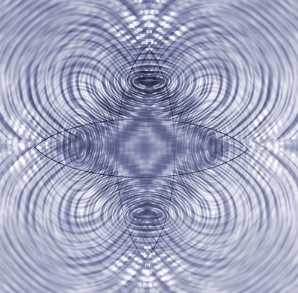
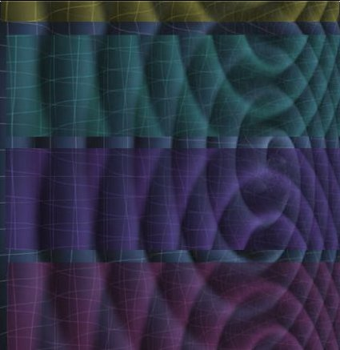
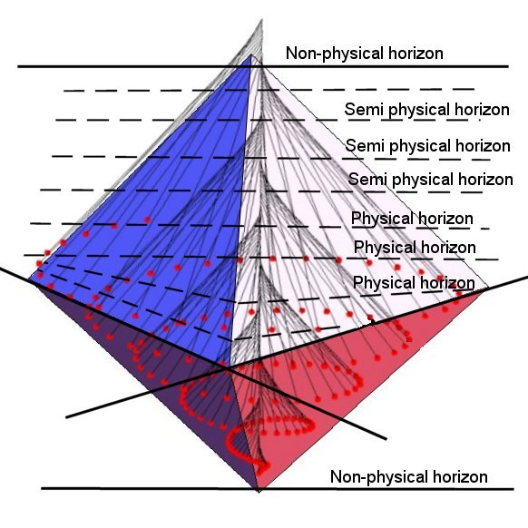
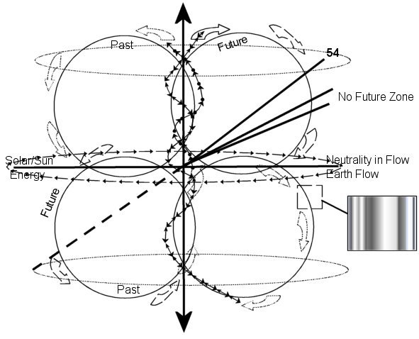
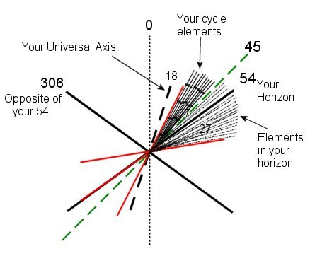
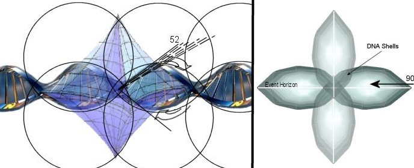
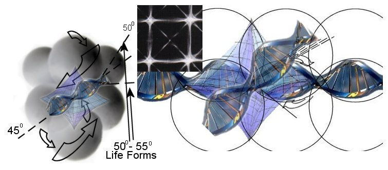

 |
|
Consciousness Has Structure
The Template for a Shaman
Consciousness is a
band of energy that can be found in layers just like the vibrational
“Shells” mentioned previously. They are layered because of common
vibration; this includes desire, intelligence, and the emotional
quotients. Layering occurs after thought has arisen; from there it
naturally pools or gravitates into common arenas of the matrix of all
sentient beings. Exchanges of thought and information as well as
experiences can be tapped into at these regions. This banding is and
does overlap realities in all levels. The difference is that individual
realties are only capable of intersecting or tapping into that which is
of common reach into their vibrational fields. You can, in your reality,
extend out into the higher or lower bands by raising or lowering your
vibration to the level of choice.
Tapping into music, art, invention is achieved this way. Start by
finding the common desire and intent of your emotional field. Follow it
up or down after connection is secured. Once a vibrational shift
has been felt – Let Go, and absorb the background energy! This will lead
you to the information you seek. You can ask for help in the learning
stages for there are many that would love to assist. Everyone
understands evolution of spirit!
|
 |
|
Perception of Time
Perception, a physical based recognition that is the
observation of ones vibrational level in time sequences called Sector
Sequencing. This sequencing is directly related to the field of
vibration that a life form’s specific vibration (DNA) occupies.
Perception then becomes a field of observable
probabilities that are constituted reflections of ones own vibrational
field, within the boundaries of the DNA’s vibrational limits.
DNA thus becomes the vehicle for time flow as this
provides the template and the vibration of a perceivable reality.
Within this perceivable field of vibration, all can be
achieved within the limits of the vibrational realities capacity.
Sequencing becomes a matter of perception through the
variables of the field stream of time and sequencing vibration, higher
or lower.
As time moves forward so does one’s perception of the
sequences called learned experiences. It is in the perception of
learning that one has the experience due to comparison of the change or
the shift in vibration.
This is the essence of evolution and the injection into
the sequence at any point finds its source from lower or higher
nonphysical vibratory levels (called sprit).
Spirit has the choice of where it will focus its desire
into this sequential field and with the vibrational DNA profile that is
needed to bring the experience to fruition.
Although mirrored, DNA sequencing is a flow in opposite
directions that create balance. It is not something that can be observed
from either directional side.
Physical DNA is one half of the flow direction of the
DNA Sphere and its placement in a Time Sector of any given physical
reality.
Reality and the perception of it has now become the
eventual sequence of desire or thought in physical form. This form can
now occupy space in the context of a co-creative reality with other like
vibratory states or physical forms.
Physical form is the direct result of desire
interacting on the field of universal matrix and its structure through
vibrational differences and the sequencing of these differences from one
another.
Below are some diagrams to contemplate:
Below are
some diagrams to contemplate:
|
|  |
 |
|
 |
Page 17